id="js_content" style="">
正文共计4014字
预计阅读时间7min
转载请在后台回复“授权”
7月13日，9岁女孩章子欣的遗体被发现。
几乎同时间的宁夏，三个小孩一起玩耍，从一个木架上跌落。
其中一个6岁的小女孩头部着地，当场昏迷。
另外一个12岁的男孩害怕女孩苏醒后告诉家长而受责罚，遂用木板将女孩打死。
留守儿童、人贩子、娈童、毒奶粉、假一秒、雾霾、暴力、扭曲式教育.....这就是我们孩子成长的世界。
一点都不像童话故事。
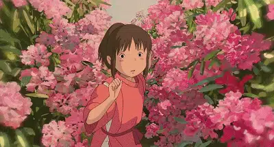
孩子可以冒险的地方只有父母视线范围那么大。
孩子可以信任的对象也只是可以数的过来的几个人。
孤单无助时，龙猫不会出现。
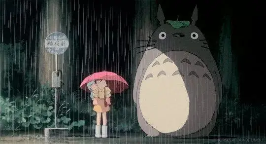
遇到危险时，小白龙也不会出现。
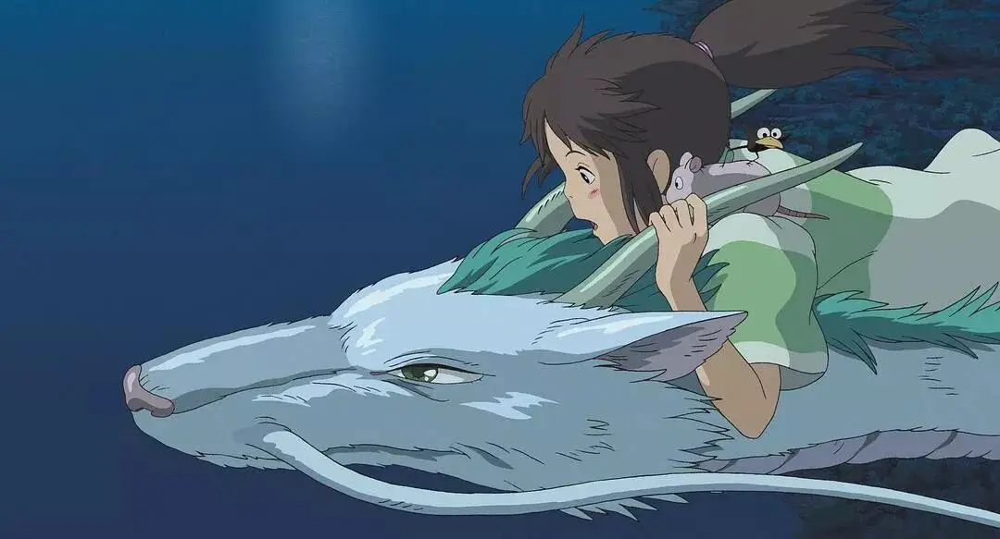
现实就是如此残酷，但作为父母，我们依旧不会将这些可怕的事情说给孩子听。
我们虽知道当今的社会阶层固化有多严重，却还是会将灰姑娘和青蛙变王子的故事讲给孩子听。
我们虽竭尽全力不让孩子离开自己的视线，却还是不停地将一个又一个冒险故事讲给孩子听。
我们虽然时时刻刻保持着对身边人的警惕，却还是会将一个又一个关于爱、关于信任的童话故事讲给孩子听。
我们虽早已经不再相信这个世界会存在真正的正义和公平，却还是会将一个个正义战胜邪恶、王子和公主在一起的故事讲给孩子听。
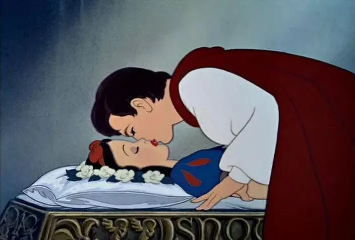
因为只有这些美好的东西才能给孩子快乐和希望，我们实在不忍心让孩子过早地承载这些噩梦。
就算我们不得已说了一些内容，孩子也只是一脸吃惊、懵懵懂懂地看着我们。
“那些坏人是大灰狼么？”
所以，不论这个世界多么残忍，孩子的起点永远都是美好的童话。
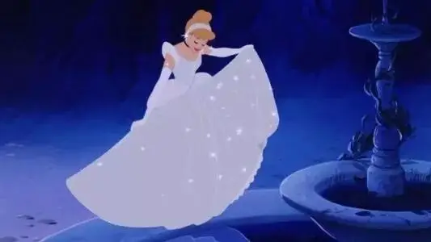
-01- 童话的四种异化
在中国，成年人对孩子的教育是割裂的，我们会将自己都不信的东西传递给孩子。
会一边给老师塞着红包，一边告诉孩子要正直。
而孩子就成长于这些落差中。
直到孩子慢慢长大，亲眼见证了这个社会的虚伪、冷漠和残酷。
直到他们发现童话里都是骗人的。
于是，童话发生了第一次异化。
这次异化中，无所不能的魔法消失了，完美无缺的王子消失了。
孩子不再是孩子。
他们不再幻想，而是变得更加“务实”。
他们不再等待那神奇的真爱之吻，而是衡量着各种门当户对的现实条件。
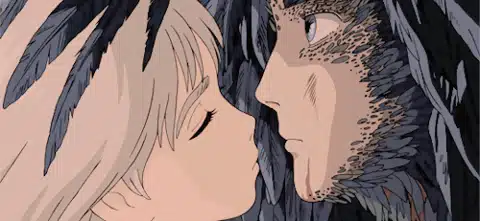
他们也不再相信有人会踩着七色云彩来拯救自己，而是只相信自己的双手。
童话变成了一部冰冷的现实主义小说。
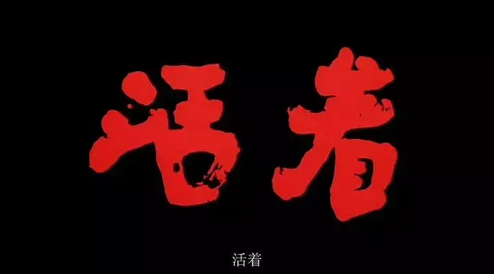
这部小说虽然很冰冷，但还在可忍受范围之内。
但走着走着，更加残酷的事情发生了。
自己本本分分，却被人无端欺负。
自己的孩子那样可爱，却被人无情拐走。
自己勤勤恳恳，却成为了权贵的韭菜。
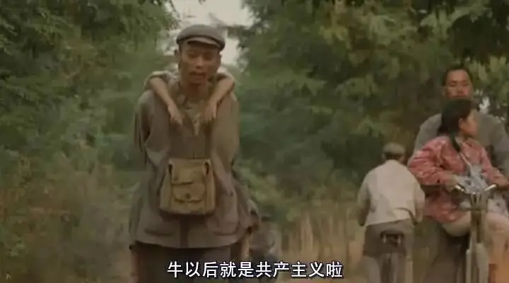
愤怒、仇恨开始在心中燃起。
于是，童话发生了第二次异化。
这次，美丽的天空消失了，绿油油的草地消失了。
五彩缤纷的童话世界变成单调压抑的黑白色。
童话黑化成了恐怖故事。
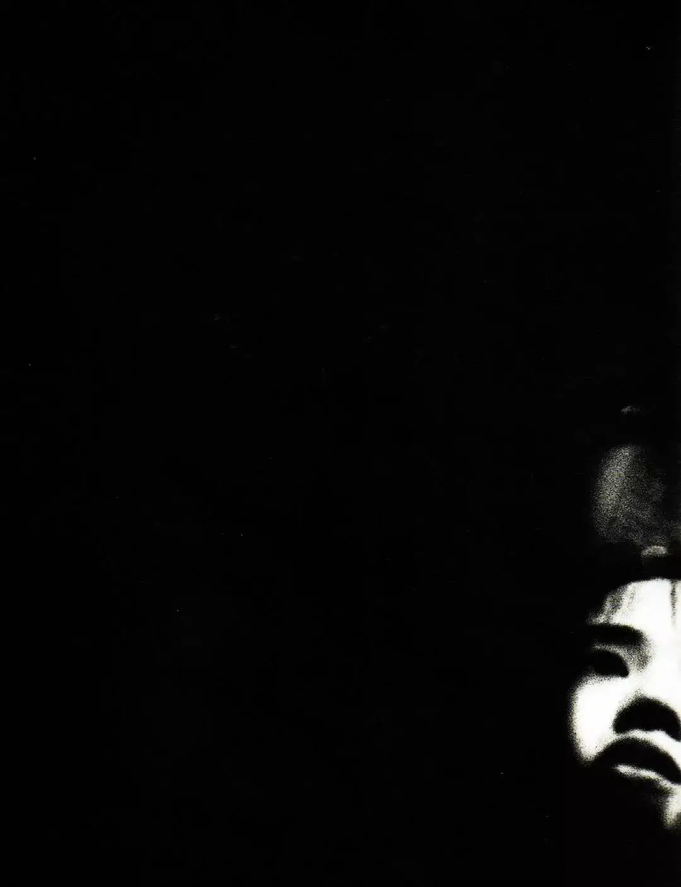
现世中蒙受冤屈的，他们在临死前会喊一句“做鬼也不会放过你。”
这样他们便可以化身厉鬼为自己伸张正义。
现世中，有情人难以终成眷属，那就做一对鬼夫妻再续前缘。
扭曲、愤怒的面具背后依旧是对公义、爱情和生命的渴望和追求。
当这份希望被闪电击中，被海啸吞噬时。
童话发生了第三次变异。
这次，没有了生命的价值和方向，没有继续走下去的动力和期许。
童话变成了一个黑色幽默。
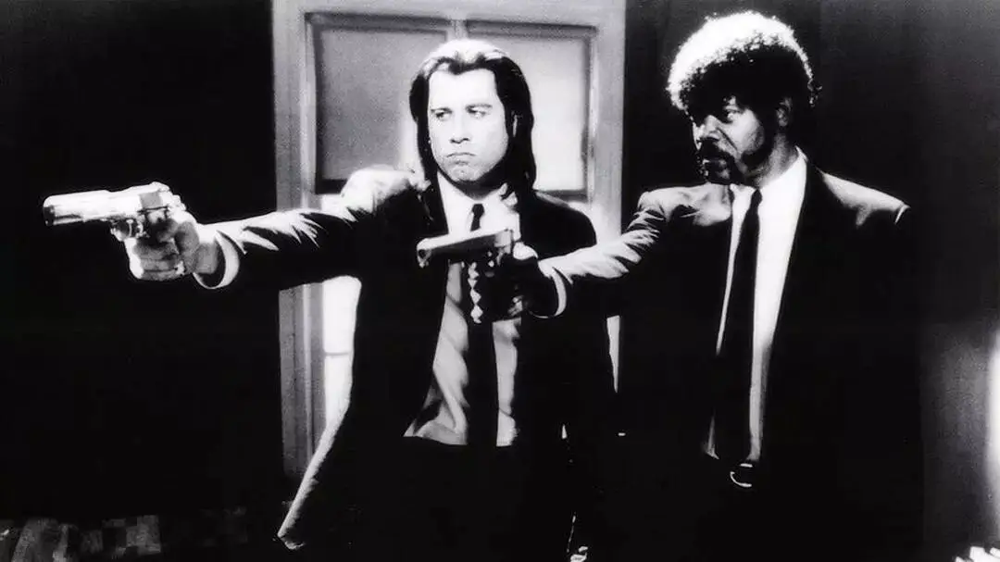
像行尸走肉一般走在路上，却被一块高空脱落的瓷砖砸到重症监护室。
垂死挣扎一个月终于苏醒，却被一口饭噎死。
命运无常、宿命、无正无邪，活着和死去没有任何区别。
但即便如此，当一个人真的面对死亡时，即使悲观如叔本华，也一样充满了未知的恐惧。
于是，童话会发生最后一次异化。
原本静谧的世界随着一阵眩晕开始地动山摇。
消失已久的阳光忽然回光返照。

黑白世界忽然幻化为五彩缤纷的天堂。
僵硬的石头忽然像有了生命一样漂浮在空中。
过去可以让自己“脚踏实地”的地面迅速崩塌。
在急速坠落的过程中，爱人、父母、孩子、老师还有一些看起来熟悉却一下子记不起名字的面孔一闪而过。
恐惧、思念、遗憾、悔恨.....各种复杂的情绪迅速袭来。
忽然，坠落在刹那间停滞，原来你置身于浩瀚的宇宙中。
你终于发现，过去以为自己看到的、自己触碰到的世界就是全部的世界。
实际上，是自己太过于渺小，这个世界的浩瀚远超过你的想象力。
瞬间，过去被自己所不屑的童话般的愿望被唤醒。
天堂、彼岸、某种闪耀着神性光辉的神秘世界成为你最后的盼望。
有意思的是，你的家人也会不由自主地希望“愿天堂一切安好”。
过去在赤裸裸的生活面前说青蛙变王子的事情有多幼稚，今天，在死亡面前，说房价、说家长里短、说奋斗就有多幼稚。
不论这个世界多么残酷，生于童话，也终于童话。
这就是人。
童话的存在，说明上帝留在人心中对于天堂、对于永恒的渴望会因各样原因变弱，但从不会消失。
对于两个可怜的女孩，也许，上帝不忍心她们继续做留守儿童，便提前把她们接回了天堂。
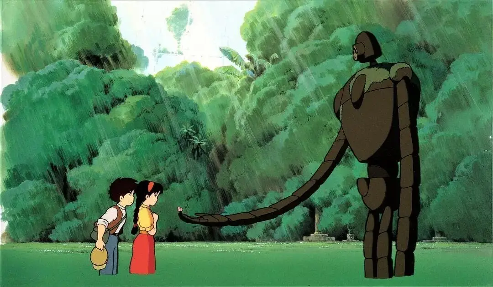
-02- 真正的理想主义
要让一个孩子相信童话非常容易，因为他们天生喜欢童话。
但要从一个充满异化、死亡、战争、欺骗、孤独和仇恨的成人世界中，重新找到起初的美好，重新唤醒被压抑很久对纯洁、善良、爱等所有美好之事的渴望。
这不是一件容易的事。
但宫崎骏做到了！
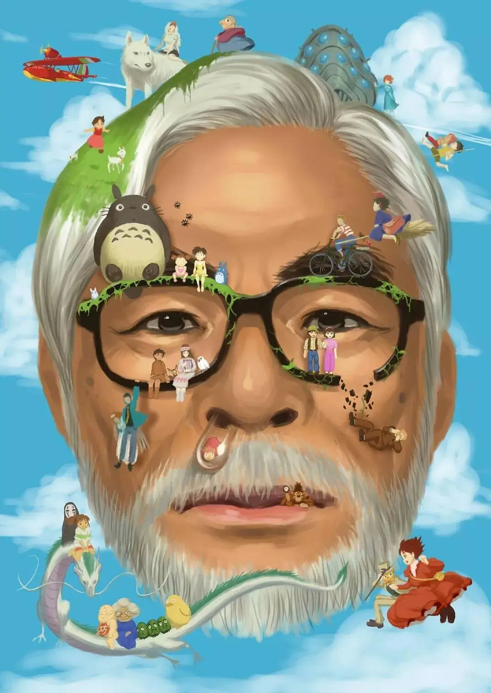
他的故事不只是儿童童话故事中简单的冒险，而是充满了权力斗争、死亡、环境污染、贪婪等成人世界的元素。
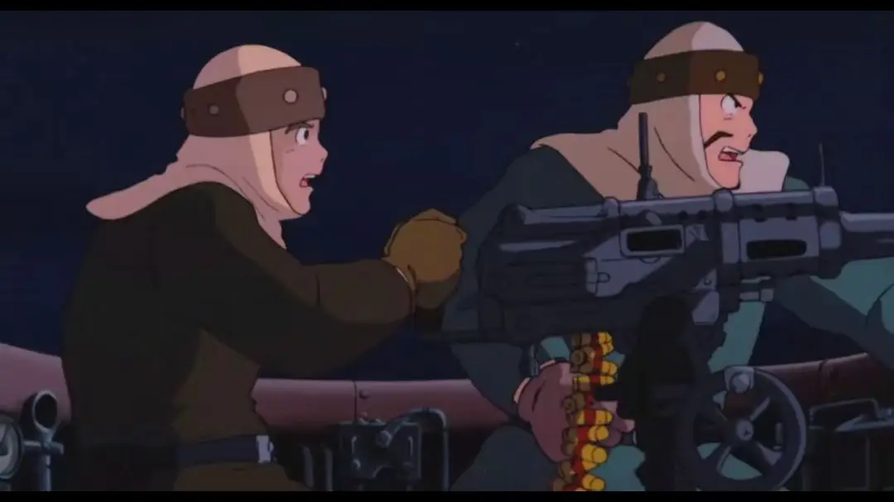
千寻、娜乌西卡、希达公主、苏菲，因为各种机缘巧合闯入了这个可怕的世界。
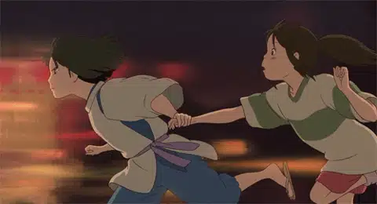
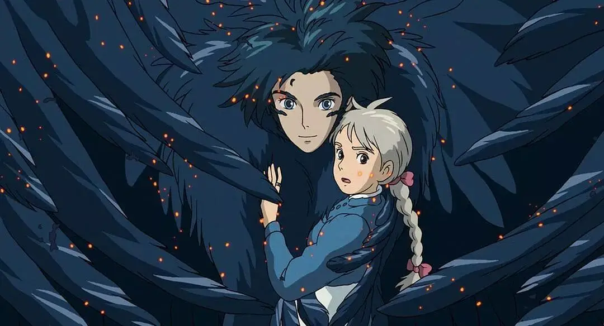
她们虽然单纯、柔弱，却拥有一种特别的能力。
在神隐村里，每个人都比千寻能力强，却只有千寻感受到了无脸男的孤独。
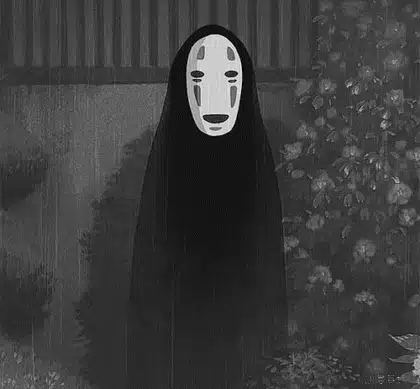
在风之谷中，每个人都认为腐海森林是灾难，却只有娜乌西卡能够觉察到大自然对于人类的恩泽，能够看到玉虫凶悍外表下的温柔。

《天空之城》中希达公主对自己的身世只有若隐若现的记忆，但她颈项间的飞行石却能指引她找到神秘的天空之城。
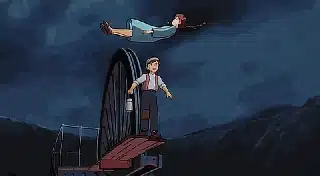
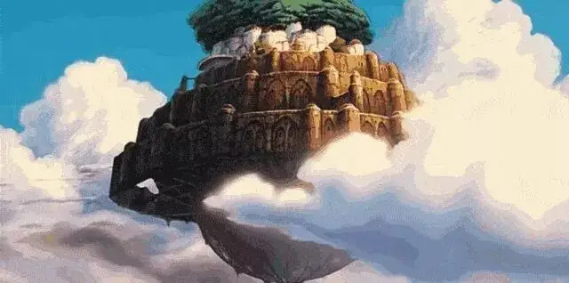
《哈儿的移动城堡》中，苏菲更是被巫婆诅咒成一个80岁的老太太，虽行动迟缓，但她的心灵却有着异乎寻常的敏锐、勇敢和力量。
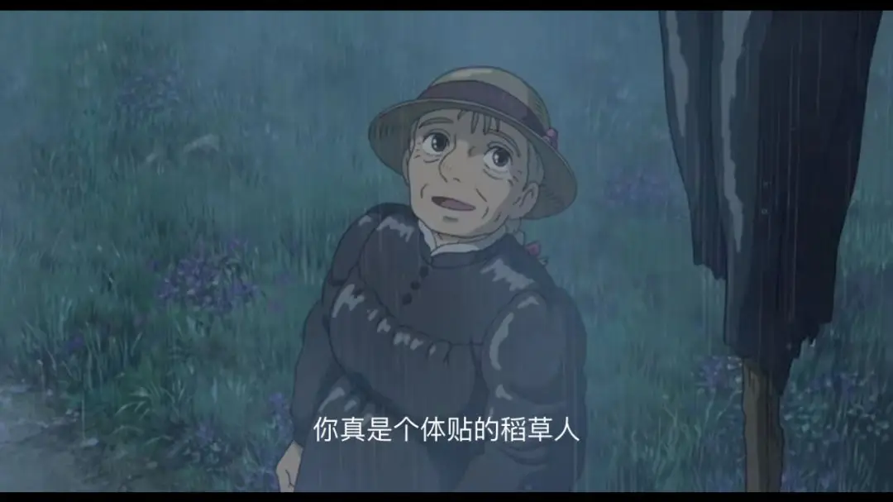
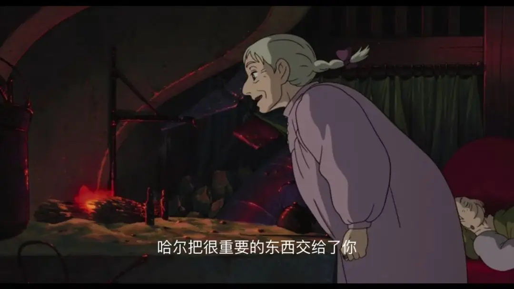
《龙猫》中，姐妹俩都没有能力去给躺在医院的妈妈送去礼物，但却能看到大人看不到的龙猫。
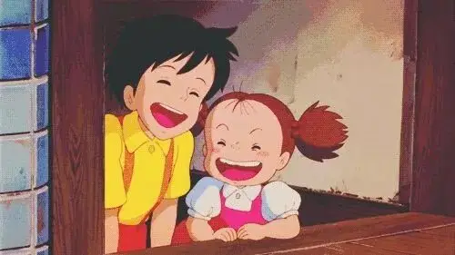

这些小女孩代表着爱、信任、敬畏和勇敢，拥有穿透冷漠、仇恨、迷茫的力量。
她们虽小，却能让小白龙找回名字，让无脸男感受到温暖，让哈儿找回失去的心脏，让天空之城免于沦为人类权力欲望的工具，让森林的保护神感动。
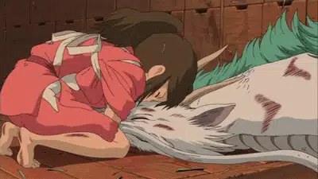
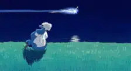
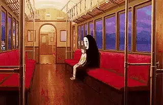

真正能触及人心灵的东西永远都是最简单的东西。
宫崎骏将成人世界里的苦楚、孤独和落寞简化成一些看似简单却意味非常深远的东西。
多年以后，当你回过头来看总会有新的发现和感动。
就我自己，重新看宫崎骏的作品，让我震撼的不仅是那些充满想象力的故事，更是很多过去我没有注意到的细节。
《千与千寻》中，当白龙带着小千寻逃跑时，白龙叮嘱千寻，千万不要呼气，要不然魔法就会解除，就会被人发现。
于是千寻一边强忍着恐慌，一边憋着气，整个脸胀的像一个气球。
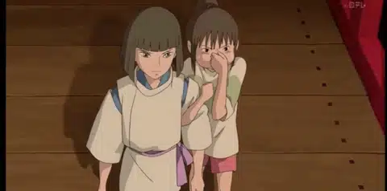
可正当马上通过小桥时，千寻忽然被眼前一跃而起的青蛙吓的破了气。
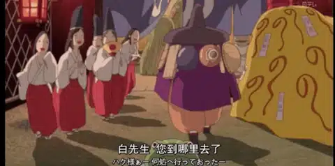
后来千寻非常自责地向白龙道歉。
白龙却很温柔地说“不，千寻已经很努力了”。
带过孩子的父母便能体会这份温柔有多难得。
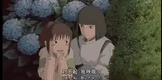
之后，千寻硬着头皮在神隐村找工作、做苦工。
一天下来，千寻看上去已经非常勇敢。
可当她终于放松下来，一边大口吃着白龙给自己的饭团，一边却忍不住大哭起来。
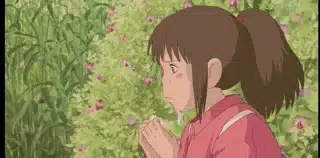
白龙则很温柔地安慰千寻，“一定吃了不少苦吧”。
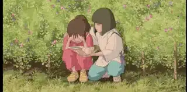
再比如《天空之城》中，希达公主历经艰险终于平安归来，海盗老婆婆将希达拥在怀里，又怜又爱地说“头发被剪掉了才是大事”。
就这么简单的一句话，却让人无比感动。
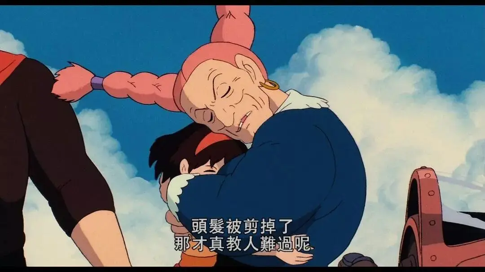
因此，小孩子会很喜欢宫崎骏的作品，但真正能看懂并掉下眼泪的一定是有过各种人生阅历的成年人。
对于无数个起早贪黑、忙忙碌碌到忘记自己名字的“白龙”们，看完《千与千寻》后，会有一种失而复得的感觉。
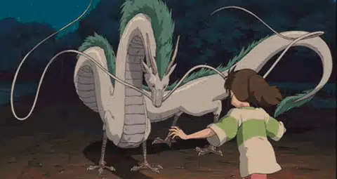
对于站在雨中孤零零的“无脸男”，看到千寻敞开的门时，心头瞬间会被感动。
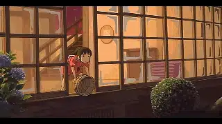
对于那些为名为利出卖自己灵魂的“哈儿”，看完《哈尔的移动城堡》，会重新感受一颗真实的心是那样的珍贵和有分量。

对于那些外表坚硬、已经忘记温柔为何物的刺猬们，看到《风之谷》的玉虫后，便会明白丑陋凶悍外表下的那种纯净是多么的美好和崇高。
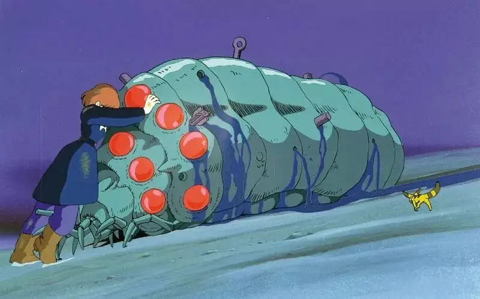
对于焦虑难安、夜不能寐的都市人，看完《龙猫》后，会忍不住躲在被子里哭泣。
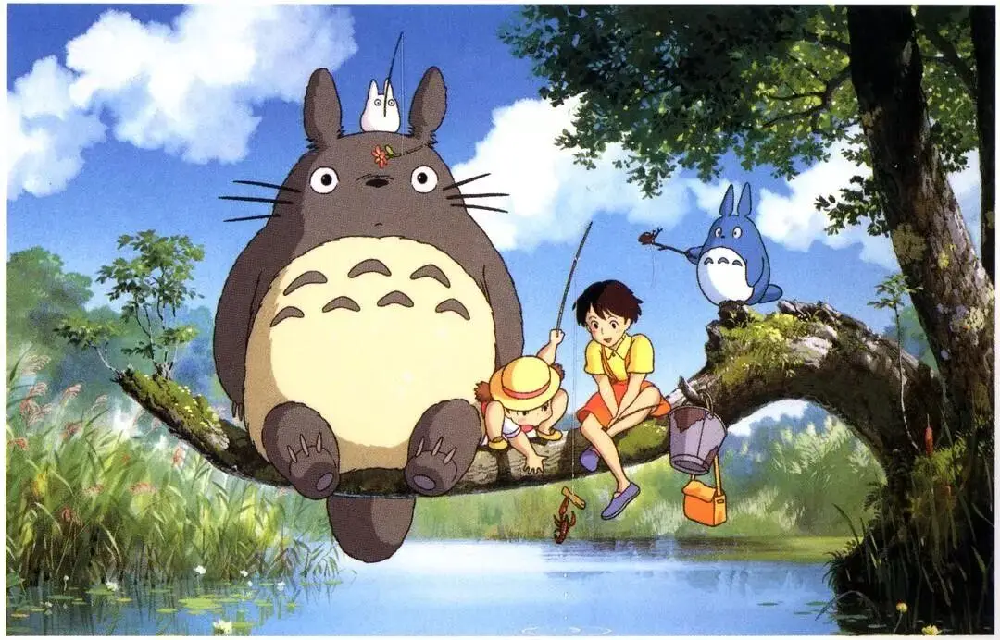
对于物质现实、自私自利的中年人，看完《天空之城》，会被那块晶莹剔透的飞行石触动。
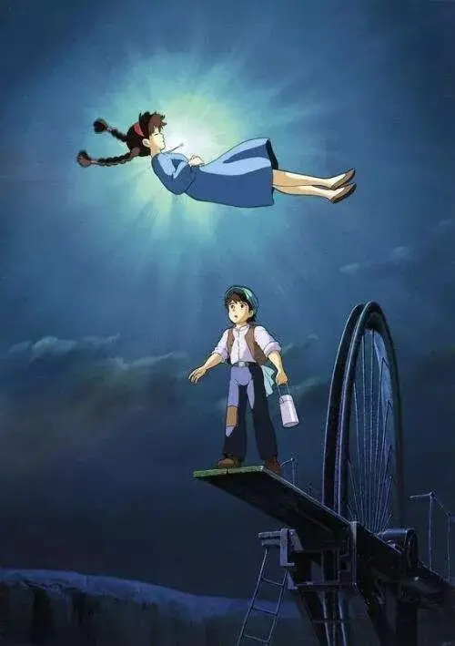
对于生活在钢筋水泥的现代人，看完《幽灵公主》，会对大自然产生敬畏。
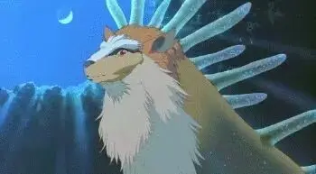
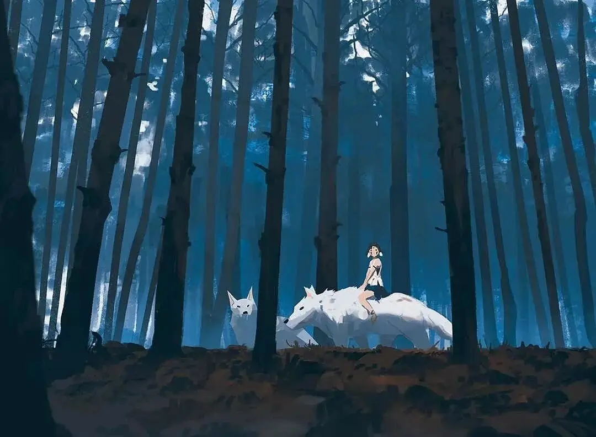
能创作出这么美好的作品，可见宫崎骏有一颗赤子之心。
这样的人生活在这个满是罪恶的世界，自然会变成一个悲观主义者。
不知道宫崎骏如果看了章子欣的新闻，会有怎样复杂的感受。
千寻是亮光，但很多时候宫崎骏是那个站在雨中的无脸男，是那个失去了心脏的哈儿。
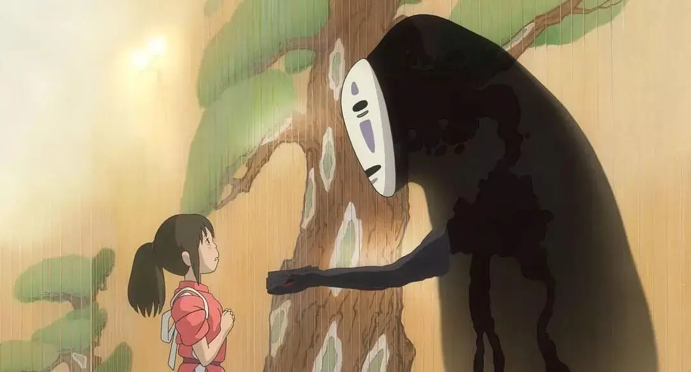
所以，在宫崎骏的作品中，我们总会感受到一种莫名的悲伤。
可能是天边忽然飘来的一片乌云，可能是千寻的一次哭泣。
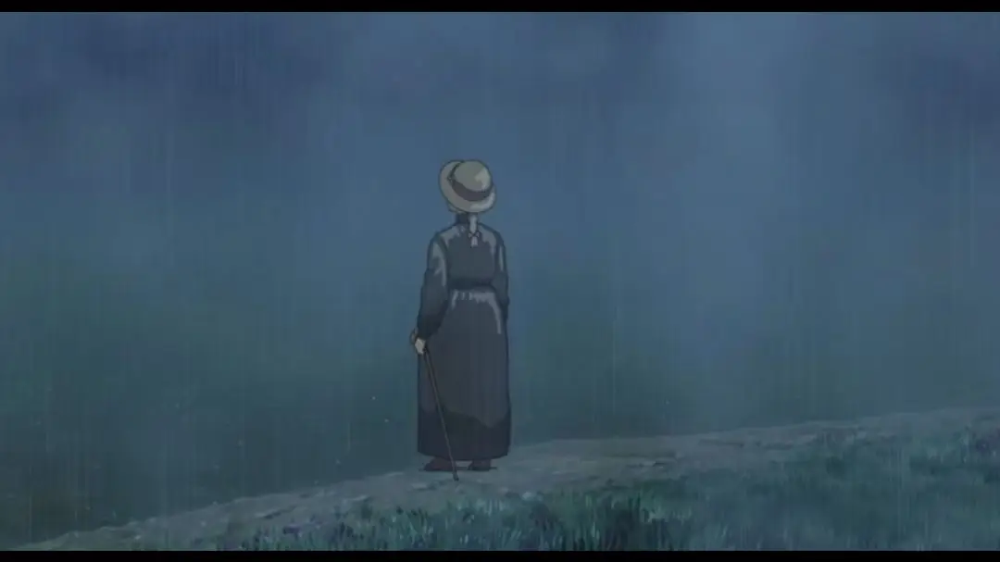
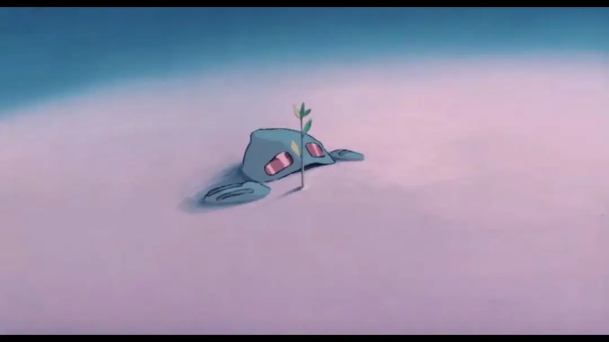
但更多时候，让我们流泪的是宫崎骏作品中那些最美丽最动人的场景。
比如走在金色草原上的蓝衣使者，比如从天而降的流星，比如和千寻静静坐在电车上的无脸男，比如从天而降的希达公主。
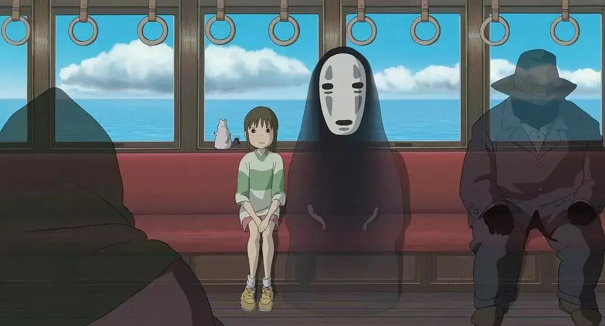
那些画面、那些音乐、那些眼神，纯净、美好到让你心碎。
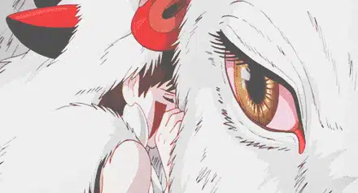
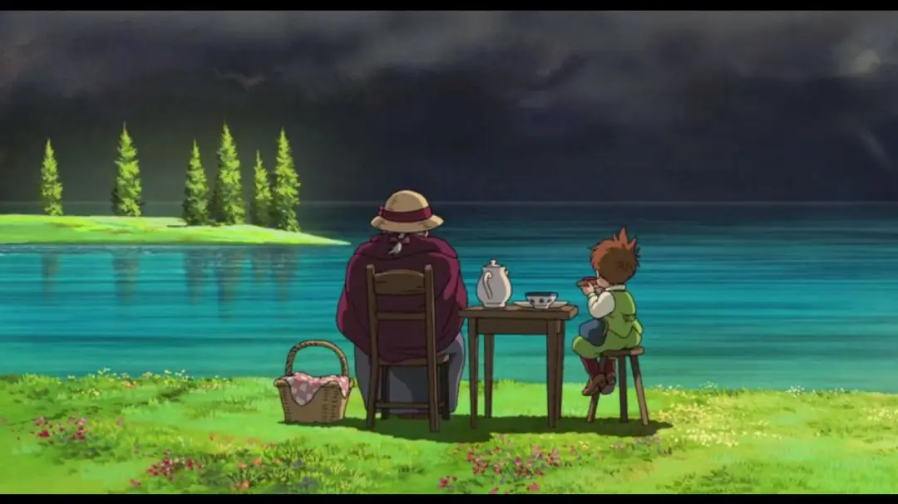
当一些东西璀璨到了极点会变得非常易碎，因为哪怕是一丝杂质，都会让那份纯净荡然无存。
这就是宫崎骏作品中最让人感动的地方。
你可以通过他的作品忽然窥见天堂的美好和圣洁，同时你又很清楚这种美不属于人间。
所以一边陶醉，一边又担心它逝去。
这是一种非常复杂的感动，不是来自于煽情，而是缘于一种曾经失落如今被再次唤醒的美好记忆。
是从心灵深处折射出来的永恒之光。
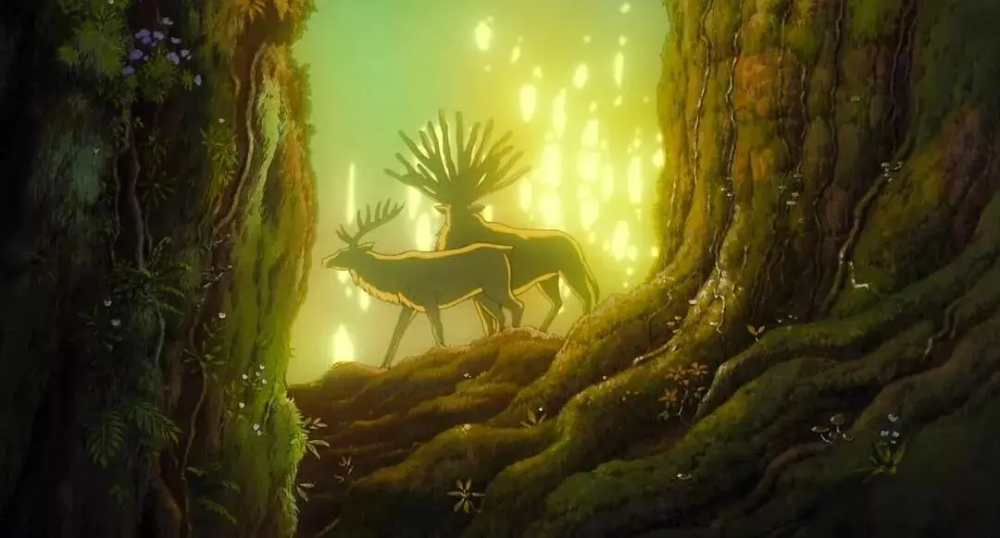
正如《千与千寻》中的那首歌“虽然悲伤在重演，但我仍坚信不疑；虽然前途很飘渺，但我仍寻找光明”
宫崎骏拥有某种力量，能从肮脏的世界中萃取出了最纯净的东西，能从漫长的黑暗中让光苏醒。
这些东西即便只存在一瞬间，也会让人无比震撼，给人极大的希望和温暖。

罗曼.罗兰曾说“世界上只有一种真正的英雄主义，那就是在认识生活的真相后依然热爱生活”。
我要说，世界上只有一种真正的理想主义，那就是活在锅碗瓢盆、柴米油盐、罪恶黑暗的世界上，却依旧有着童话般的梦想。
而宫崎骏就是一个真正的理想主义者。
这里没有挑逗你眼目情欲的小鲜肉
也没有挑动你肉体情欲的段子
更没有膨胀你今生骄傲的鸡血
我们只在乎那些最质朴真诚的作品
在那里我们才能恢复真正的想象力
我们也坚信这才是我们真正需要的

ID:Six_hundred_hits
长按二维码，一键关注
【六百击】
电影评论
尽情分享朋友圈